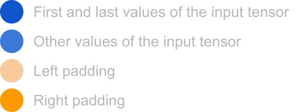
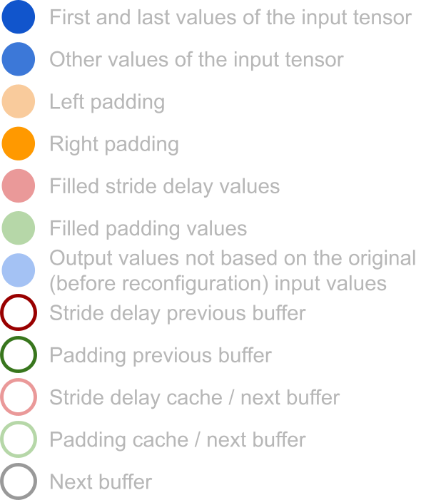
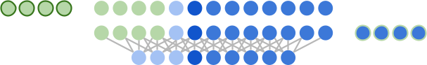
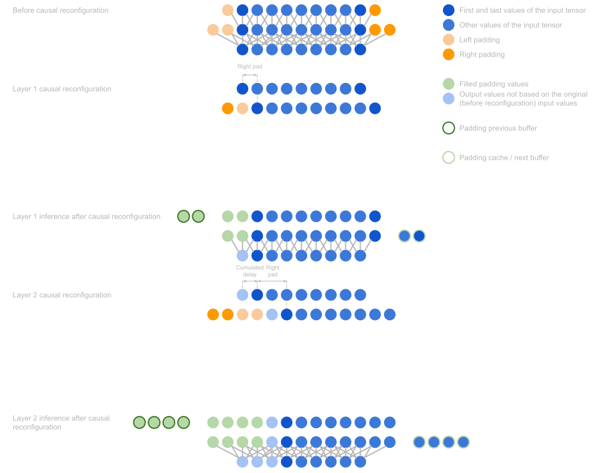
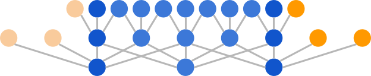
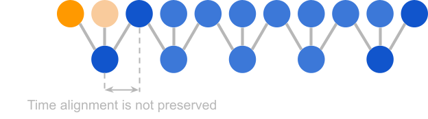
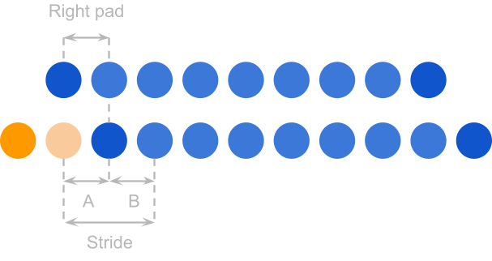
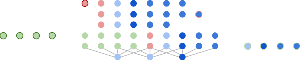
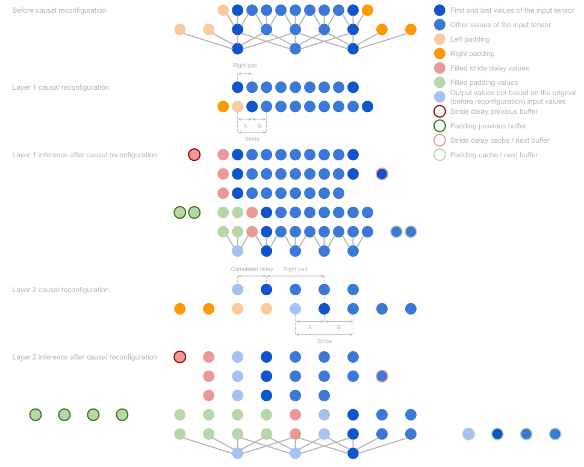
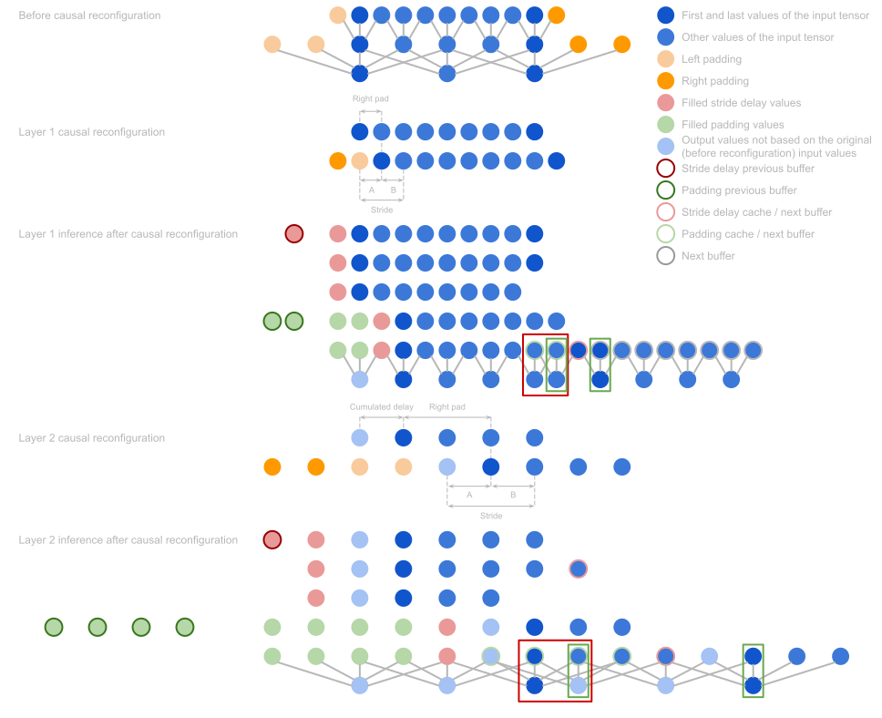

Streamable Neural Audio Synthesis With Non-Causal Convolutions
Post about how to perform streamable neural audio synthesis.
Introduction
This post dives into how to perform streamable neural audio synthesis. It is based on the following two papers:
RAVE: A variational autoencoder for fast and high-quality neural audio synthesis
This paper introduces the RAVE model which is a variational autoencoder trained in two stages:
First the regular variational autoencoder training,
Followed by an additional adversarial training stage for the decoder.
See the Short introduction to the RAVE model post for more details.
Streamable Neural Audio Synthesis With Non-Causal Convolutions
- This paper introduces a post-training reconfiguration of convolutional networks that allows to turn them into streamable models (for example the RAVE model as it is introduced in the RAVE paper, is not directly streamable and thus, requires this type of post-training reconfiguration).
The Streamable Neural Audio Synthesis With Non-Causal Convolutions paper is about how to process a stream of audio data. Usually:
The input data comes as a sequence of audio chunks called buffers.
Each buffer is processed sequentially.
The outputs are concatenated to produce the output audio stream.
Problem formulation
However, there are some challenges:
As explained in the Encoder section of the Short introduction to the RAVE model post, the convolution layers usually use padding to maintain the time alignment between the inputs and outputs across layers.
This creates discontinuities between buffers.
These discontinuities can cause audible artifacts.
They are mainly due to phase discontinuities.
This is because the phase changes much faster than the amplitude (at every sample for periodic signals).
Thus, it is much more sensitive to the discontinuities between buffers.


Possible solutions
Overlap-add
Process overlapping buffers and blend them to smooth boundaries.
This solution is compatible with any generative model.
However, it requires redundant computations and leads to degraded quality during transition phases.
It also requires to cache buffers that are large enough to fill the receptive field of the model.
All of this results in high latency.
Causal convolutions
Use causal convolutional neural networks with cached padding as in the Streaming keyword spotting on mobile devices paper.
The idea is to put all the padding on the left side of the audio chunk (the side that corresponds to the values in the past).
Then, each audio chunk (except the first one) is padded with the end of the previous audio chunk (hence the name causal, because each chunk is padded with values from the past but is not padded with values from the future).
This solution preserves continuity between chunks.
However, it restricts the model architectures to causal convolutions which makes learning more complex because the model is not given access to the values in the future during training even though they are available (because training is not done in a streaming way).
Proposed solution
The paper proposes to perform a post-training causal reconfiguration of the model.
This allows to consider convolutional networks trained using any type of padding (potentially non-causal) and turn them into streamable models.
The main idea is to remove the right padding (on the future side) and replace it with an additional left padding (on the past side).
The main challenge of such a reconfiguration is to leave the computational graph of the model unchanged.
Indeed, depending on the configuration of each layer, the additional left padding can break the time alignment between its inputs and outputs.
Thus, the paper proposes to keep track of the delay cumulated at each new layer and to introduce additional delays in the graph to restore the time alignment.
Below are some detailed explanations for different layer configurations.
\(D_{l}\) is the delay introduced by layer \(l\).
\({Cumulated\ Delay}_{l}\) is the delay cumulated from the first layer up to layer \(l\).
The following color legend is used

Convolution layers with \(stride = 1\)
The figure below represents 2 convolution layers before the causal reconfiguration
Layer 1
\(stride = 1\)
\(kernel\ size = 3\)
\(padding = (1,\ 1)\)
Layer 2
\(stride = 1\)
\(kernel\ size = 3\)
\(padding = (2,\ 2)\)

Let us see how the causal reconfiguration is applied to each layer.
Layer 1
Reconfiguration
The reconfiguration moves the right padding to the left of the graph and thus, introduces a delay \(D_{1} = right\ pad = 1\) compared to the initial non causal graph.

Inference
We note \(total\ pad = left\ pad + right\ pad\) the total amount of padding.
For layer 1
- \(total\ pad = 2\).
During inference, these 3 steps are applied:
The \(total\ pad\) left pad values are filled with the last \(total\ pad\) values of the previous buffer.
The last \(total\ pad\) values of the current buffer are stored in the cache.
And the convolution is applied.
Each step corresponds to one line in the figure below, see here for the original implementation.

Cumulated delay
Hence, for convolution layers with \(stride = 1\)
\(D_{l} = right\ pad\)
\({Cumulated\ Delay}_{l} = \ {Cumulated\ Delay}_{l - 1} + D_{l}\)
Which gives at layer 1
\(D_{1} = right\ pad = 1\)
\({Cumulated\ Delay}_{1} = \ {Cumulated\ Delay}_{0} + D_{1} = 0 + 1 = 1\)
Layer 2
Reconfiguration
The reconfiguration again moves the right padding to the left of the graph and thus, introduces a delay \(D_{2} = right\ pad = 2\).

Inference
For layer 2
- \(total\ pad = 4\)
During inference, the same 3 steps as for layer 1 are applied.

Cumulated delay
The \(Cumulated\ Delay\) at layer 2 is
\(D_{2} = right\ pad = 2\)
\({Cumulated\ Delay}_{2} = \ {Cumulated\ Delay}_{1} + D_{2} = 1 + 2 = 3\)
Summary
Below is a summary of all the steps explained above.

For convolution layers with \(stride = 1\)
\(D_{l} = right\ pad\)
\({Cumulated\ Delay}_{l} = \ {Cumulated\ Delay}_{l - 1} + D_{l}\)
Convolution layers with \(stride > 1\)
The figure below represents 2 convolution layers before the causal reconfiguration
Layer 1
\(stride = 2\)
\(kernel\ size = 3\)
\(padding = (1,\ 1)\)
Layer 2
\(stride = 2\)
\(kernel\ size = 5\)
\(padding = (2,\ 2)\)

Let us see how the causal reconfiguration is applied to each layer.
Layer 1
Reconfiguration
The reconfiguration moves the right padding to the left of the graph and thus, introduces a delay \(right\ pad = 1\) compared to the initial non causal graph.
However, as can be seen below, this delay breaks the time alignment between the layer input and the convolution stride.
This means that without additional reconfiguration, the time alignment between the layer input and output is not preserved.

In order to align again the initial first value of the input tensor with the convolution stride, an additional \(stride\ delay\) needs to be introduced

This additional \(stride\ delay\) is computed as follows
Let us first consider the quantity \(A\).
\(A = (Cumulated\ Delay\ + \ right\ pad)\ \%\ stride\)
At layer 1, \({Cumulated\ Delay}_{0} = 0\). Hence, it is not visible in the figure above. Please refer to layer 2 reconfiguration to see how \(Cumulated\ Delay\) appears in the calculation.
\(stride\ delay\) could be defined as equal to \(B = stride - A\) but the case when \(A = 0\) should be handled properly.
Indeed, when \(A = 0\), the first value of the input tensor is aligned with the convolution stride.
Thus, \(stride\ delay\) should be \(0\).
This can be achieved by defining \(stride\ delay\) as \(stride\ delay = B\ \%\ stride\).
This means, \(stride\ delay = B\ \%\ stride = (stride - A)\ \%\ stride\) and
If \(A = 0\)
- \(stride\ delay = (stride - 0)\ \%\ stride = 0\)
Else
Because \(A = (Cumulated\ Delay\ + \ right\ pad)\ \%\ stride\)),
We have \(0 < A < stride\),
And thus, \(stride\ delay = (stride - A)\ \%\ stride = stride - A\)
Giving hence the expected behavior.
To summarize:
\(stride\ delay = B\ \%\ stride\)
\(stride\ delay = (stride - A)\ \%\ stride\)
\(stride\ delay = (stride - (Cumulated\ Delay\ + \ right\ pad)\ \%\ stride)\ \%\ stride\)
- The implementation of this computation can be found here.
For layer 1
- \(stride\ delay\)
\(= (stride - (Cumulated\ Delay\ + \ right\ pad)\ \%\ stride)\ \%\ stride\)
\(= (2 - (0 + \ 1)\ \%\ 2)\ \%\ 2\)
\(= 1\)
Inference
For layer 1
- \(stride\ delay = 1\)
- \(total\ pad = 2\)
During inference, 3 additional steps are applied in addition to the 3 steps explained above when \(stride = 1\).
The first 3 steps handle the \(stride\ delay\) introduced to preserve the stride alignment while the 3 other steps handle the causal reconfiguration of the right padding as seen before.
The 6 steps are:
The first \(stride\ delay\) values are filled with the last \(stride\ delay\) values of the previous buffer.
The last \(stride\ delay\) values of the current buffer are stored in the cache.
The resulting tensor is cropped (the last \(stride\ delay\) values are dropped).
This is done to preserve the time dimensionality of the input tensor.
The dropped values are not lost because they will be processed by the next buffer.
However, a slight discontinuity seems to occur. See Notes on the continuity between buffers for more details.
The \(total\ pad\) left pad values are filled with the last \(total\ pad\) values of the previous buffer.
The last \(total\ pad\) values of the current buffer are stored in the cache.
And the convolution is applied.
Each step corresponds to one line in the figure below, see here for the original implementation.

Cumulated delay
For convolution layers with \(stride > 1\)
\(D_{l} = stride\ delay + right\ pad\)
\({Cumulated\ Delay}_{l} = ({Cumulated\ Delay}_{l - 1} + D_{l})\ //\ stride\)
The \(//\ stride\) division allows to express the delay in the unit of the output space.
- Indeed, \(1\ output\ sample = stride\ input\ samples\)
This gives at layer 1
\(D_{1} = stride\ delay + right\ pad = 1 + 2 = 3\)
\({Cumulated\ Delay}_{1}\)
\(= ({Cumulated\ Delay}_{0} + D_{1})\ //\ stride\)
\(= (0 + 1 + 1)\ //\ 2\)
\(= 1\)
Layer 2
Reconfiguration
As for layer 1, in order to align again the initial first value of the input tensor with the convolution stride, an additional \(stride\ delay\) needs to be introduced

This additional \(stride\ delay\) is computed as follows
- \(stride\ delay\)
\(= (stride - (Cumulated\ Delay\ + \ right\ pad)\ \%\ stride)\ \%\ stride\)
\(= (2 - (1 + \ 2)\ \%\ 2)\ \%\ 2\)
\(= 1\)
Inference
For layer 2
- \(stride\ delay = 1\)
- \(total\ pad = 4\)
During inference, the same 6 steps as for layer 1 are applied.

Cumulated delay
The \(Cumulated\ Delay\) at layer 2 is
\(D_{2} = stride\ delay + right\ pad = 1 + 2 = 3\)
\({Cumulated\ Delay}_{2}\)
\(= ({Cumulated\ Delay}_{1} + D_{2})\ //\ stride\)
\(= (1 + 3)\ //\ 2\)
\(= 2\)
Summary
Below is a summary of all the steps explained above.

For convolution layers with \(stride > 1\)
- \(stride\ delay = (stride - ({Cumulated\ Delay}_{l - 1} + \ right\ pad)\ \%\ stride)\ \%\ stride\)
\(D_{l} = stride\ delay + right\ pad\)
\({Cumulated\ Delay}_{l} = ({Cumulated\ Delay}_{l - 1} + D_{l})\ //\ stride\)
Notes on the continuity between buffers
The explanations given in this Convolution layers with stride>1 section correspond to the Streamable Neural Audio Synthesis With Non-Causal Convolutions paper and its official implementation RAVE v1.
The proposed solution allows to make the convolutions causal while maintaining the stride alignment.
However, a slight discontinuity in the processing of the input audio stream seems to remain.
The figure below shows how 2 contiguous buffers are processed.
As can be seen, the stride alignment is correct (green rectangles).
However, the stride between the receptive fields of the layers over their input stream seems not to be constant around the point of contact between two buffers (red rectangles).

Despite this possible discontinuity, the Streamable Neural Audio Synthesis With Non-Causal Convolutions paper reports no difference between the outputs of the studied RAVE model before and after the causal reconfiguration (figure 8 of the paper).
This suggests that either the discontinuity has a negligible effect on the output quality or that I have missed something and there is no such discontinuity.
Convolution layers summary
For convolution layers with \(stride > 1\)
- \(stride\ delay = (stride - ({Cumulated\ Delay}_{l - 1} + \ right\ pad)\ \%\ stride)\ \%\ stride\)
\(D_{l} = stride\ delay + right\ pad\)
\({Cumulated\ Delay}_{l} = ({Cumulated\ Delay}_{l - 1} + D_{l})\ //\ stride\)
Which, simplifies for \(stride = 1\) to
\(stride\ delay = 0\) (because \(x\ \%\ 1 = 0\))
\(D_{l} = right\ pad\)
\({Cumulated\ Delay}_{l} = {Cumulated\ Delay}_{l - 1} + D_{l}\)
Parallel branches
Similarly the convolution layers, parallel branches in the computational graph need to be handled after the causal reconfiguration.
Indeed, each branch introduces its own delay, depending on the layers that compose it.
Before merging parallel branches, for example in the element-wise sum layer in a residual connection, all the parallel branches need to be aligned to compensate for their different individual delays.
This is simply done by aligning all the parallel branches to the maximum delay. Hence, an additional \({Alignment\ Delay}_{i}\) is added to each branch \(i\):
\({Alignment\ Delay}_{i} = Maximum\ Cumulated\ Delay\ - {Cumulated\ Delay}_{i}\)
where \(Maximum\ Cumulated\ Delay\) is the cumulated delay of the branch with the largest cumulated delay.